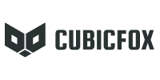
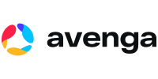

Chances are that if you’re reading this blog then you’re a founder on your journey to finding the best web development agencies in Germany for your next project. I get that it can be a very daunting task especially if this is your first time as a tech founder. However, your search just got a little bit easier because I’ve put together a comprehensive list of the best agencies you can hire.
Let’s Discover The Top 10 Web development agencies in Germany Before Starting Your Next Project
Whenever you’re starting a new web development project hiring an agency is a great way to delegate the tedious tech bits to an expert while you concentrate on your business. Many founders make the mistake of hiring a full fledged ream when they’re building their app instead of looking at agencies. There are many web development agencies in Germany and our list covers the best providers. It's important to understand that all companies I’ve mentioned here are of top quality. However, it's your project and you may have specific requirements to meet.
Finding the right agency that aligns with your vision is key to building a robust digital product. The major things you should look for when selecting an agency are whether they are experienced, what their track record with similar products looks like, do they work on the technologies you want to use, how the communication is going to be and the culture fit. When you’re searching for web development agencies in Germany culture fit is perhaps the most important bit. Because the agency you choose has to work with you throughout your product development journey and changing service providers in between a project is just a hassle.
With that said, let's see our lineup.
When it comes to choosing the right provider from the best web development agencies in Germany you have to compare their services with your project. Let’s see how each of them work.
1. Sparkout Tech Solutions inc.
Sparkout Tech Solutions Inc is a premium provider of web development services and it works with clients in Germany and all over europe. It has a global presence and has been providing highly customizable solutions for more than 8 years.
One major thing to note about Sparkout Tech is that it is a full service agency which provides services in web app and mobile app development, blockchain development, AI/ML development, UI/UX design and technology consulting. Additionally, as one of the leading web development agencies in Germany Sparkout works closely with its clients to provide solutions that are visually appealing and completely tailored to your business and customers. The user centric approach makes sure that you not only get great looking apps but also gives your customers a great user experience. As a full scale agency Sparkout provides you with multiple project management models like Waterfall and Agile. The Waterfall model gives you a per project pricing where you decide on a set of features and the solutions are built on a fixed timeline. As one of the top web development agencies in Germany Sparkout also provides you services in the agile model which is great for larger projects like SaaS product development and you can make iterations to your product. With agile you also get monthly billing where you can make changes to your product within a billing cycle without any extra cost.
Pros:
- Sparkout provides full scale services with experience with emerging technologies like blockchain and AI/ML solutions.
- Multiple project management models are available like Waterfall and Agile for a flexible and seamless development process.
- Works with businesses of all sizes as one of the leading web development agencies in Germany whether you’re a small startup or a large enterprise.
- A very experienced product team that can build you scalable and robust web applications quickly and efficiently.
Cons:
- Since the services are comprehensive the costs associated with it may be on the higher side.
- If you have a complex app idea that you want to build using emerging technologies the development timelines may be on the longer side.
Website: www.sparkouttech.
2. Applaunch.io
Applaunch.io as the name suggests is a leading provider for web app and mobile app development. And just like their name their offerings are wide in terms of the digital solutions that you will get.
As one of the top web development agencies in Germany they are well known for creating solutions that focus on innovation and functionality. One great thing about them is that they are great at consulting and they can help you make your ideas better and turn them into successful applications. Additionally, they place a keen emphasis on creating intuitive and user friendly designs while still using cutting edge technology to make your apps perform better. What’s more is that apart from software engineering services Applaunch also provides services like project planning, UI/UX design, testing and post launch support.
Pros:
- As one of the leading web development agencies in Germany they have deep expertise in both web and mobile app development.
- They also have a great focus on building apps that have an intuitive UI and seamless user experience.
- They provide you with highly tailored and customized solutions no matter if you’re a small business or a large enterprise.
Cons:
- Since they provide a specialized service you may find that their solutions come at a higher cost.
- If you have a very large project that you’re trying to build your timelines could be on the longer side.
- As one of the full service web development agencies in Germany they are not too niched down so if you’re into a highly niche industry you have to see if their services align with your vision for the project.
Website: www.applaunch.io
3. DECONDIA
If you’re a business that’s trying to improve and optimize your digital presence then DECONDIA just might be the right partner for you. They are also a full service agency and provide highly quality solutions in digital transformation.
Additionally, one great thing about DECONDIA is that they are experts in building scalable and high performance web apps that integrate emerging technologies like AI, blockchain and cloud solutions. As one of the trusted web development agencies in Germany they have a good reputation for building solutions that are future proof by adopting new and emerging technologies for development. Their service offerings are pretty wide with solutions like custom software development , enterprise solutions and e-commerce websites. Also they have a great full scale team for product development and specialize in working closely with their clients to build highly tailored solutions that also have a good user experience.
Pros:
- If you’re into advanced technologies they work with AI and blockchain for building apps as one of the most trusted web development agencies in Germany.
- Since they are a full scale services agency their expertise in communication and project management is excellent.
- One of their major focuses is on scalability and long term growth for the clients that they work with.
Cons:
- Because they work with advanced technologies their costs for development may be on the higher side if you’re a smaller business.
- Their detail oriented service may mean that your development timelines could be on the longer side if you have a complex project.
- Since they also provide support services as one of the leading web development agencies in Germany they may charge separately for extended services after project delivery.
Website: www.decondia.com
4. Mobiteam GmbH
Mobiteam GmbH is a very well known agency from Germany and they specialize in building customized web app solutions and digital design. It is an agency that focuses highly on building user interfaces that look sleek and modern.
This allows you to build web apps that are both visually appealing and functionally superior. They are a full cycle development agency and will work with you whether you’re a small startup or a large enterprise. Adding to this their services range from the initial ideation stage to deployment to production as one of the top tier web development agencies in Germany. Their end to end nature of services makes them a great technology partner for businesses that want to transform their online presence.
Pros:
- Their focus is very strong on building web app solutions that have an appealing design and great user experience.
- If you’re looking for an agency that can give you end to end services which includes post launch support and maintenance Mobiteam just might be your right pick.
- Their turnaround times are very quick if you have a small or medium scale web app project.
Cons:
- They are one of the major web development agencies in Germany which may mean that their presence outside of Germany might be limited.
- If you have a highly design focused project in mind then the costs may be on the higher side.
- If you’re looking for solutions that need emerging technologies like AI or blockchain their offers may not cover them.
Website: www.mobiteam.de
5. Groovy Web
Groovy Web is another agency that stands true to their name and can help you build high quality web applications that bring a balance of innovation and scalability. They are a full service agency and their services cover everything you might need for your project like frontend and backend development, UI/UX design, QA and testing and cloud solutions.
As one of the leading web development agencies in Germany their highest emphasis is on building web apps that are completely tailored to your business. If you want your development process to be flexible then you’re in luck because they provide project management in the agile model. This will allow you to easily make changes to your web app during the development process. They have a world class team with them for development and project management and can be a great choice for you if you want an adaptable and efficient development process.
Pros:
- If the development process being flexible and iterative is your priority then as one of the top web development agencies in Germany they provide you with agile development.
- They offer a very detailed and wide array of services which includes UI/UX designing and cloud based solutions.
- They usually provide you with transparent pricing and won’t put in any hidden costs.
Cons:
- If you’re looking for services that involve niche technologies then they may not align with your requirements.
- Although they work with businesses of all sizes their focus on building custom enterprise apps may be limited.
- Although they are a full service agency they may not align with your requirements if your project is very large scale.
Website: www.groovyweb.co
6. Cubic Fox

Cubic Fox is very well known among web development agencies in Germany and focuses on building scalable solutions for startups and established businesses.
Additionally, one of their keen focuses is on building fast and reliable web applications that can meet the demanding conditions of the market for you as a business. They are well known for creating web apps that are tailored to their clients; business and can scale as your business scales. Cubic Fox has a good reputation for managing projects efficiently and being transparent with their clients. This means that they will keep you in the loop about everything that happens with your project as one of the leading web development agencies in Germany.
Pros:
- They have a good reputation for project management and effective communication.
- They can provide you with highly tailored web applications regardless of the size of your business.
- They also provide a very comprehensive range of post launch support for your web apps.
Cons:
- Since they are highly focused on building solutions, rapidly customizations may be limited for complex projects.
- Also since their services are very advanced their costs may be on the higher side if you’re on a limited budget.
- They are not into a specific niche as one of the full service web development agencies in Germany so if your project is aimed at a very niche industry then their services may not align with your needs.
Website: www.cubicfox.com
7. Proarea
When it comes to agencies that are highly tech driven Proarea would be on top of the list. They are well known for building web apps and custom software solutions that are of high quality.
Adding to that they also have a good reputation for delivering projects quickly while maintaining a high level of quality. One of their major plus points is that they focus on building solutions using cutting edge technologies that are scalable. As one of the leading web development agencies in Germany they offer a full array of services which starts from the initial ideation and design of your web apps to the shipping stage and post launch support.
Pros:
- They have a very keen focus on delivering digital products rapidly for you.
- They are very much experienced in building solutions using modern technologies.
- They offer a very comprehensive array of services and can help you on your project from end to end.
Cons:
- If you’re trying to build your web apps for a niche business then customization options for products may not align with your needs as one of the full scale web development agencies in Germany.
- If you want to include advanced features in your web app then their costs for development may be on the higher side.
- Since they are a full service agency if you need post launch support then it may cost additionally.
Website: www.proarea.com
8. Intertec
Intertec is a high quality service provider known for building web applications but they also provide full cycle services. They have a very high focus on helping enterprises build solutions that enhance their digital presence.
As one of the foremost web development agencies in Germany Intertic has a reputation for building web apps that meet increasing demand of modern businesses and provides enhanced performance , scalability and security. Additionally, their team is well experienced and trained for using agile methodologies so that you can flexibly make changes to your development plans on the go. This makes the development process very adaptable for you and you can make quick changes to your web app without the entire project development process coming apart.
Pros:
- They are a full cycle development agency with deep expertise as one of the top web development agencies in Germany.
- One major advantage with them is their strong focus on building apps with high performance and scalability.
- You can get very reliable products from them with the added advantage of agile methodologies for project management.
Cons:
- If your project involves building a high scale product then the cost for development may be on the higher side.
- They focus primarily on enterprise grade web applications so it might be limiting if your product is smaller in scale.
- Due to the detailed and comprehensive nature of their services if you have a complex project the development timelines may be longer.
Website:www.intertec.io
9. Milies
Milies is one of the well known web development agencies in Germany and applies a highly personalized approach and attention to detail when it comes to building your web apps.
They are known for working closely with their clients whether you’re a startup or a large organization and provide solutions that are completely tailored to your business and your specific challenges. Milies is a great choice for you if you’re looking for a long term technology partner and they focus highly on building web apps that are scalable and user friendly at the same time.
Pros:
- They have a very personalized approach when it comes to building web app solutions for your business as one of the leading web development agencies in Germany.
- They also have a very keen focus on building applications for the web that are user friendly and highly functional.
- They can offer a full range of services for you which starts from web app designing to post launch maintenance.
Cons:
- If you’re looking for highly customized solutions then their costs for development may be on the higher side.
- If your project is centered around emerging technologies then their services may not align with your requirements.
- Again if you have a large scale and highly customized solution in mind then the timelines may be on the longer side.
Website: www.milies.net
10. Avenga

Avenga is another popular name among web development agencies in Germany and they focus majorly on providing end to end digital solutions for enterprises.
One of their major benefits is that they focus on building web apps for your business that can integrate with complex business processes. Additionally, their full scale service covers multiple offerings like web development, cloud integration and custom software product development. They are well known for their expertise in technology and for the ability to handle large and complex projects for enterprises.
Pros:
- They are highly experienced in building complex and large scale projects for enterprise clients as one of the major web development agencies in Germany.
- They have very strong technical expertise and can build solutions for a wide range of industries.
- Their expertise also comes with the ability to work on projects using agile project management.
Cons:
- Since their primary focus is on enterprise solutions if you’re a smaller business with a limited budget it might be a barrier.
- Again since they work on larger projects their development timelines may be on the longer side.
- Due to the nature of their services their focus on creative design and user experience may be limited.
Website: www.avenga.com
Now finishing up our top 10 list of the best web development agencies for building your next project
Now we’re at the end of the line for our blog but you’re just getting started with building your game changing web application. The web development agencies in Germany that we’ve mentioned here are of high quality and you can get great results choosing any one of them. However, your decision should be based on which agency provides the right set of services that align with the overall goal of your business and the industry you’re in.
If this blog post helped you then consider sharing this with a business owner who might find this helpful.